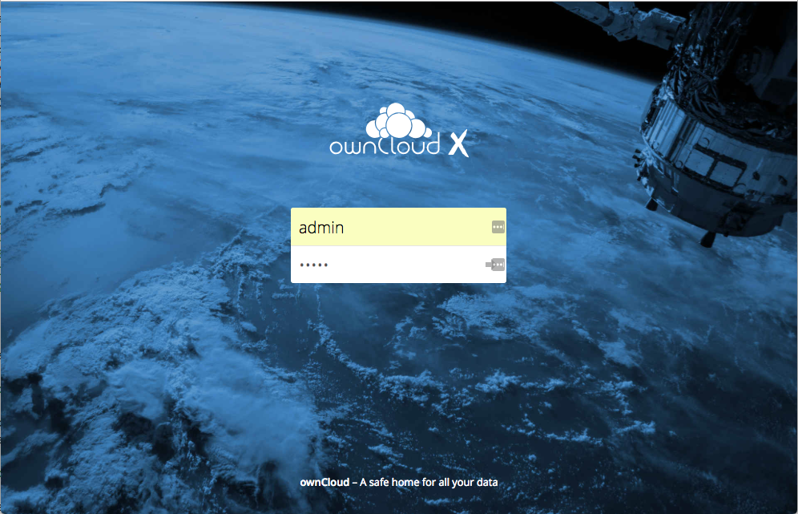

Installing ownCloud Using Docker
Prerequisites
- Docker
- Docker Compose
- Review the ownCloud System Requirements
Install ownCloud Using Docker
You can use the ownCloud Docker image to install ownCloud using Docker. This image is designed to work with a data volume on the host file system, and with separate MariaDB and Redis containers. This configuration:
- Exposes port 8080 for HTTP connections
- Mounts the data and MySQL data directories on the host for persistent storage
-
Run the following commands to create and switch to a new project directory.
mkdir owncloud-docker-server cd owncloud-docker-server -
Download the
docker-compose.ymlfile from the ownCloud GitHub repository. For example:wget https://raw.githubusercontent.com/owncloud-docker/server/master/docker-compose.yml -
Create a
.envenvironment configuration file with the following required settings.Setting Name Description Example OWNCLOUD_VERSION The ownCloud version latest OWNCLOUD_DOMAIN The ownCloud domain localhost ADMIN_USERNAME Admin user name admin ADMIN_PASSWORD Admin password admin HTTP_PORT The HTTP port 8080 For example:
cat << EOF > .env OWNCLOUD_VERSION=10.0 OWNCLOUD_DOMAIN=localhost ADMIN_USERNAME=admin ADMIN_PASSWORD=admin HTTP_PORT=8080 EOF -
Build and start the container:
docker-compose up -d -
When this process completes, run the following command to confirm that all of the containers have started successfully.
docker-compose psIf the containers are running, this command should return a response similar to the following:
Name Command State Ports ------------------------------------------------------------------------------------------------------- server_db_1 /usr/bin/entrypoint /bin/s ... Up 3306/tcp server_owncloud_1 /usr/local/bin/entrypoint ... Up 0.0.0.0:8080->8080/tcp server_redis_1 /bin/s6-svscan /etc/s6 Up 6379/tcpNote: Even if all of the containers are running, it may take a few minutes for ownCloud to be fully functional. If you run
docker-compose logs --follow owncloudand see a significant amount of information logging to the console, this indicates that the web UI may not be accessible yet. -
Use a browser to log in to the ownCloud UI at http://
:8080. Enter the user name and password you specified in the `.env` file.

Related Information